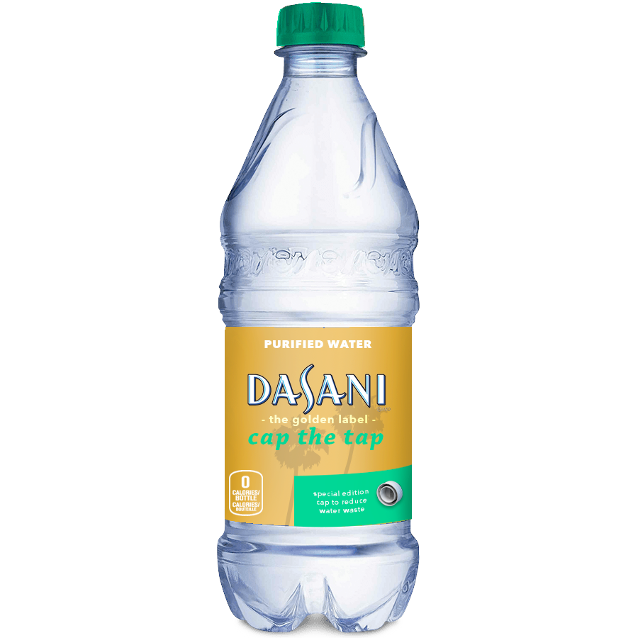

Cap the Tap
A Campaign to End Water Waste
With a newly designed bottle cap and an associated social media campaign, we can help end water shortages in California by reducing water waste in homes.
With a newly designed bottle cap and an associated social media campaign, we can help end water shortages in California by reducing water waste in homes.
California, the nation's most populous state, is in the middle of the worst drought in over 1,000 years. If businesses, residents, and industry continue to use the water as they always have, the results could be dire.
1. One sink can’t make a big difference. If every home in California installed a faucet cap, the Cap the Tap program could save 7 billion gallons of water in one year, saving households $20 million in water and sewage bills and nearly $70 million in energy costs to heat water.
2. Businesses and agriculture are entirely responsible for water waste in California. Water is literally going down the drain. In 2010 enough water to supply 13 million families for a year went out to sea and was lost because there was nowhere to store it.
3. Drought only affects industry. A 2014 study by the UC Davis Center for Watershed Sciences found that California's severe drought could cost the state $2.2 billion this year, including the loss of 17,100 farm-related jobs.
Specially marked bottles of water with newly designed bottle caps attach to a standard-issue kitchen spout. The cap increases the water pressure of the faucet and reduces the average faucet flow rate from 2.2 to 1.5 gallons per minute, giving 38 million California residents a way to cut water waste from their faucet by 33%.
Our green caps are a great way to temporarily reduce water waste in California homes and raise awareness about the importance of water conservation. These green caps need to be replaced periodically, but through our trading program, Californians can mail in 30 green caps for one permanent stainless steel cap for standard-issue faucets.
Leveraging the existing rivalry between Northern California and Southern California, the Cap the Tap campaign will encourage friendly competition between Californian counties to garner greater participation in our water conservation program. Social chatter will be tracked through the Twitter API and visualized in real-time on our microsite so more people will be motivated to participate and also be able to see the impact of their participation.
{kind=link}
{kind=link}
{kind=link}
{kind=link}